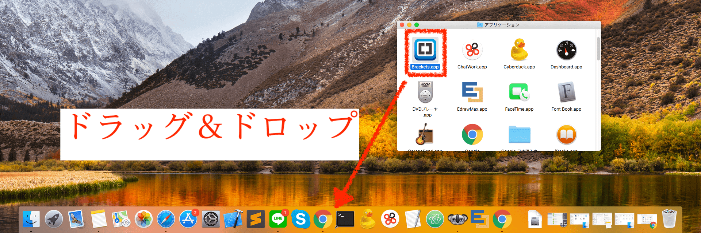
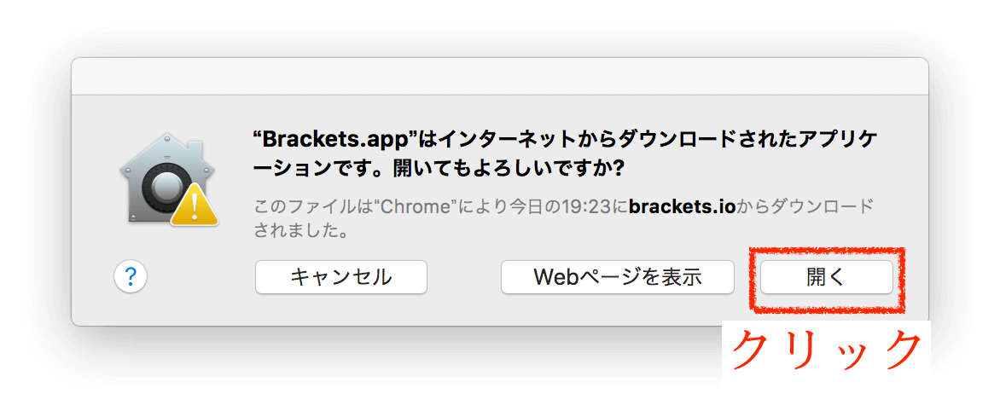

【Mac・環境構築編】BracketsでWebページを作るには
(その１)

HTMLでWebページを作りたいけど、何をしたら良いか分からない。Bracketsを使えばいいと聞いたが、どうやって設定したらいいの？使い方がよく分からない。環境設定まで詳しく教えてほしい。

そんな悩みをもつ人に向けて記事を書いていきます。
記事が役立つ人
- Webページを制作したい人
- Bracketを使いたい人
- Bracketの環境設定をしたい人
- Macユーザの人
記事内コンテンツ
Bracketsって？
Bracketsとは、HTML,CSSコーディングに
特化したテキストエディタのことです。
メモ帳でもコーディングできますが、
とてもやりづらいです。
高機能のツールを使ったほうが絶対に
良いです。無料ですしね。
日本語対応済みのため、とっかかりやすい
ですし、HTML・CSSの勉強をしたい人 or
それらを使ってWebページを
作りたい人には
ピッタリのアプリケーションです。
拡張機能も豊富なので、大規模な開発にも
対応できるのもすごいです。
Bracketsの利点3つ
- 無料
- 高性能
- リアルタイムで更新される
無料
とても使いやすいBracketsですが、
なんと無料で使用できます。
後述しますが、ライブプレビュー機能が
ついていて無料で利用できるツールは
なかなかありません。
それが、Bracketsをオススメする理由の
1つです。
高性能
無料ですが、コーディングにおいて
強力な機能がいくつもあります。
タイプミスを指摘してくれたり、
打ちたい単語の候補を教えてくれたり。
とても嬉しいのが、ファイルパスを
入力するときにも候補を出して
くれる点ですね、
すごく助かります。
あとはプラグインで機能をドンドン
追加できて、使いやすくなっていくのも
良いですね。
リアルタイム更新
さきほど紹介したライブプレビュー機能
ですが、
すごいのはリアルタイムで更新
されることです。
文字を打った瞬間、マークアップを変更
した瞬間にブラウザ画面が更新されるので、
どこをどう変更したのかがすぐに分かります。
また、選択した部分がブラウザでは
どの部分なのかがハイライト強調される
ので、
初心者の人にはとても心強いです。
分かりやすく編集することができますね。
Bracketsの環境設定
それでは早速、環境設定のやり方について説明していきます。
Bracketsをダウンロード
まず、以下URLをクリックしてアクセスして下さい。
【Brackets公式サイトURL】http://brackets.io/
このような画面が開くので、青いボタン「Bracketsをダウンロード」をクリックします。

インストール〜起動
ダウンロードが完了すると、
ダウンロードフォルダ（以下の画面）が
開きます。「Brackets.Release.dmg」を
ダブルクリックします。

しばらく待つとこの画面が開きますので、
左側の「Brackets.app」と書かれたアイコン
を
右側のフォルダへドラッグ＆ドロップして
ください。

画面は閉じずに、右側のフォルダアイコンをダブルクリックします。
アプリケーションフォルダが開くので、Brackets.appを探します。

これからは起動することが多くなるので、dockにショートカットを作成しておきます。アプリケーションフォルダの「Brackets.app」を、デスクトップのdockへドラッグ＆ドロップします。
dockにBracketsのアイコンが出てくるので、それをクリックします
すると、このような警告画面が出てくるので、「開く」をクリックします。
このような初期画面が出てくれば
セットアップ完了です。
次回以降は、dockからBracketsのアイコンを
クリックすれば作業を再開する事ができます。

プレビューで表示画面を確認してみる
ブラケッツは、現在編集中のファイルが、
ブラウザ（グーグルクローム等）で
どんな
感じに表示されているかをリアルタイムで
確認できる機能がありますので、それを
使ってみます。
ブラケッツの画面の右上にカミナリのような
マークがありますので、それをクリック
します。
※htmlファイルを選択していないと確認ができない為、注意してください。
※また、GoogleChromeをインストールしていないと表示できません。GoogleChromeのインストール方法はまた説明します。

この画面が、ブラウザで実際に表示される
画面です。
適当に文字を打ってみると分かりますが、
リアルタイムに変更が反映されています。
いちいち更新しなくて良いのは結構
うれしい点です。

まとめ
以上でBracketsのセットアップ作業は
完了です。
次回も引き続き、Webサイト制作の為の環境を整えていきます。